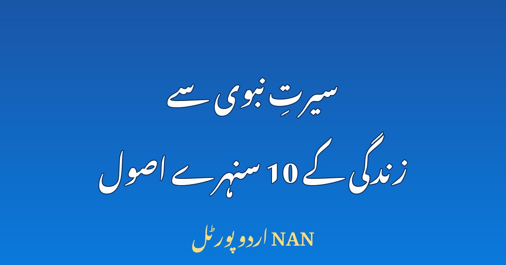

سیرتِ نبوی ﷺ سے زندگی کے 10 سنہرے اصول

نبی کریم ﷺ کی زندگی صرف تاریخ کا ایک باب نہیں، بلکہ ہر انسان کے لیے عملی رہنمائی ہے۔ آپ ﷺ کی سیرتِ طیبہ میں وہ تمام خوبیاں موجود ہیں جو ایک اچھے انسان، اچھے پڑوسی، اچھے تاجر، اچھے شوہر، اچھے والد اور اچھے رہنما کے لیے ضروری ہیں۔ آپ ﷺ نے نبوت سے پہلے ہی اپنے کردار سے لوگوں کے دل جیت لیے تھے — اسی لیے اہلِ مکہ آپ کو صادق اور امین کے لقب سے پکارتے تھے۔ اس مضمون میں سیرتِ نبوی ﷺ سے وہ 10 سنہرے اصول بیان کیے گئے ہیں جنہیں اپنا کر ہم اپنی روزمرہ زندگی کو بہتر اور باوقار بنا سکتے ہیں۔
1۔ سچائی کو کبھی نہ چھوڑیں
نبی کریم ﷺ کی سب سے نمایاں صفت صداقت تھی۔ آپ ﷺ نے کبھی جھوٹ نہیں بولا، حتیٰ کہ مشکل ترین حالات میں بھی سچ پر قائم رہے۔ سچائی انسان کی سب سے بڑی دولت ہے — جو شخص سچ بولتا ہے، لوگ اس پر اعتماد کرتے ہیں، اور اعتماد ہی ہر رشتے اور ہر کاروبار کی بنیاد ہے۔ آج کے دور میں جب جھوٹ عام ہو گیا ہے، سچ بولنا مشکل ضرور ہے، مگر یہی وہ وصف ہے جو انسان کو دوسروں سے ممتاز کرتا ہے۔ عملی قدم: روزمرہ گفتگو میں چھوٹے چھوٹے جھوٹ سے بھی بچیں، کیونکہ چھوٹا جھوٹ ہی بڑے جھوٹ کا دروازہ کھولتا ہے۔
2۔ امانت میں خیانت نہ کریں
اہلِ مکہ اپنی قیمتی امانتیں نبی کریم ﷺ کے پاس رکھواتے تھے، کیونکہ وہ جانتے تھے کہ آپ ﷺ کی امانت میں کبھی خیانت نہیں ہوگی۔ امانت صرف مال کی نہیں ہوتی — کسی کی بات، کسی کا راز، ملازمت کی ذمہ داری اور عہدے کا منصب بھی امانت ہے۔ جو شخص امانت دار ہوتا ہے، لوگ اسے اپنا راز دار اور اپنا ساتھی بناتے ہیں۔ عملی قدم: اگر کوئی آپ پر اعتماد کر کے کوئی بات یا چیز سونپے، تو اسے اپنی ذمہ داری سمجھیں اور کبھی اس میں خیانت نہ کریں۔
3۔ صبر — مشکل وقت کا سب سے بڑا ہتھیار
نبی کریم ﷺ کی زندگی میں آزمائشوں کی کمی نہ تھی — مخالفت، تکلیفیں، اپنے پیاروں کی جدائی — مگر آپ ﷺ نے ہر موقع پر صبر کا دامن تھامے رکھا۔ طائف کے واقعے میں جب آپ ﷺ کو ستایا گیا، تب بھی آپ نے بددعا کے بجائے ان لوگوں کی ہدایت کی دعا کی۔ صبر کا مطلب بے بسی نہیں، بلکہ جذبات پر قابو پا کر درست فیصلہ کرنا ہے۔ عملی قدم: جب غصہ آئے یا حالات بگڑیں، تو فوری ردِعمل کے بجائے چند لمحے رک کر سوچیں — یہی چند لمحے اکثر بڑی غلطیوں سے بچا لیتے ہیں۔
4۔ معاف کرنا — دل کی سب سے بڑی طاقت
فتحِ مکہ کے موقع پر جب آپ ﷺ کو اپنے دشمنوں پر مکمل اختیار حاصل تھا، تب آپ نے عام معافی کا اعلان فرمایا۔ جن لوگوں نے برسوں آپ کو ستایا تھا، انہیں معاف کر دیا گیا۔ معافی کمزوری نہیں، بلکہ سب سے بڑی طاقت ہے — یہ دل کو بوجھ سے آزاد کرتی ہے اور دشمنی کے سلسلے کو ختم کرتی ہے۔ عملی قدم: اگر کسی نے آپ کے ساتھ زیادتی کی ہے، تو معاف کرنے کی کوشش کریں — یہ آپ کے اپنے سکون کے لیے سب سے پہلا قدم ہے۔
5۔ پڑوسیوں اور کمزوروں کا خیال رکھیں
نبی کریم ﷺ نے پڑوسی کے حقوق پر اتنی تاکید فرمائی کہ صحابہ کو گمان ہوا کہ شاید پڑوسی کو وارث بھی بنا دیا جائے گا۔ آپ ﷺ یتیموں، بیواؤں، غلاموں اور مزدوروں کے حقوق کے سب سے بڑے محافظ تھے۔ معاشرہ اسی وقت مضبوط ہوتا ہے جب طاقتور کمزور کا سہارا بنے۔ عملی قدم: اپنے محلے کے کسی ضرورت مند کی خبر لیں، کسی یتیم بچے کی تعلیم میں مدد کریں، یا کسی مزدور کی اجرت وقت پر ادا کریں — یہ چھوٹے عمل بڑے اجر کا سبب بنتے ہیں۔
6۔ عاجزی — بڑائی سے بچیں
آپ ﷺ نے اپنے ساتھیوں کے ساتھ زمین پر بیٹھ کر کھانا کھایا، اپنے کام خود کیے، اور کبھی تکبر کا اظہار نہیں فرمایا۔ عاجزی انسان کو لوگوں کے دلوں کے قریب کرتی ہے، جبکہ تکبر انسان کو تنہا کر دیتا ہے۔ آج کے دور میں جہاں عہدہ، دولت اور شہرت لوگوں کو مغرور بنا دیتی ہے، عاجزی ہی وہ وصف ہے جو انسان کی اصل قدر بتاتا ہے۔ عملی قدم: اپنے سے کم مرتبے والے شخص سے بھی عزت سے بات کریں، اور اپنی کامیابی کا سہرا کبھی صرف اپنے سر نہ باندھیں۔
7۔ وقت کی پابندی اور نظم و ضبط
نبی کریم ﷺ کی زندگی نظم و ضبط کی بہترین مثال تھی — نمازوں کے اوقات، وعدوں کی پابندی، اور روزمرہ امور میں ترتیب۔ جو شخص وقت کا پابند ہوتا ہے، وہ دوسروں کا وقت بھی بچاتا ہے اور اپنا کام بھی بروقت مکمل کرتا ہے۔ عملی قدم: ہر دن کے آغاز میں اپنے تین اہم کام طے کریں، وعدے پر وقت کی پابندی کریں، اور موبائل پر ضائع ہونے والا وقت کم کریں۔
8۔ رحم دلی — انسانوں سے لے کر جانوروں تک
آپ ﷺ کو رحمت للعالمین کہا گیا — آپ کی رحمت صرف انسانوں تک محدود نہ تھی، بلکہ جانوروں اور ماحول تک پھیلی ہوئی تھی۔ آپ ﷺ نے جانوروں پر ظلم سے منع فرمایا اور درختوں کو نقصان پہنچانے سے بھی روکا۔ رحم دلی انسان کے دل کو نرم رکھتی ہے اور معاشرے میں محبت پھیلاتی ہے۔ عملی قدم: کسی بے زبان جانور کو تکلیف نہ پہنچائیں، راستے میں کسی کی مدد کریں، اور اپنے گھر کے بزرگوں کے ساتھ نرمی سے پیش آئیں۔
9۔ مشورہ اور دوسروں کی رائے کا احترام
نبی کریم ﷺ اہم معاملات میں اپنے صحابہ سے مشورہ فرمایا کرتے تھے، حالانکہ آپ ﷺ کو وحی کی رہنمائی حاصل تھی۔ مشورہ کرنا عقل کی علامت ہے — یہ انسان کو یک طرفہ فیصلوں کی غلطیوں سے بچاتا ہے اور ساتھیوں میں اعتماد پیدا کرتا ہے۔ عملی قدم: خاندان یا کاروبار کا کوئی اہم فیصلہ کرنے سے پہلے متعلقہ لوگوں سے رائے ضرور لیں، اور رائے مختلف ہونے پر بھی احترام سے سنیں۔
10۔ سادگی اور قناعت
آپ ﷺ کی زندگی سادگی کی اعلیٰ مثال تھی — سادہ کھانا، سادہ لباس، اور ضرورت سے زیادہ مال جمع کرنے سے پرہیز۔ قناعت کا مطلب یہ نہیں کہ انسان محنت نہ کرے، بلکہ یہ ہے کہ انسان اپنی ضروریات پر قابو رکھے اور دوسروں کی دولت پر حسد نہ کرے۔ جو شخص قناعت اختیار کرتا ہے، وہ ذہنی سکون پاتا ہے اور لالچ کی دوڑ سے آزاد ہو جاتا ہے۔ عملی قدم: اپنی آمدن کے مطابق زندگی گزاریں، غیر ضروری خریداری سے بچیں، اور جو کچھ میسر ہے اس پر شکر ادا کریں۔
نبی کریم ﷺ کی سیرت ہمیں یہ سکھاتی ہے کہ عظمت عہدے یا دولت میں نہیں، بلکہ کردار میں ہے۔ جس شخص کا کردار مضبوط ہو، وہ دنیا میں بھی عزت پاتا ہے اور آخرت میں بھی کامیاب ہوتا ہے۔ اللہ تعالیٰ ہمیں سیرتِ نبوی ﷺ پر چلنے کی توفیق عطا فرمائے۔ آمین۔